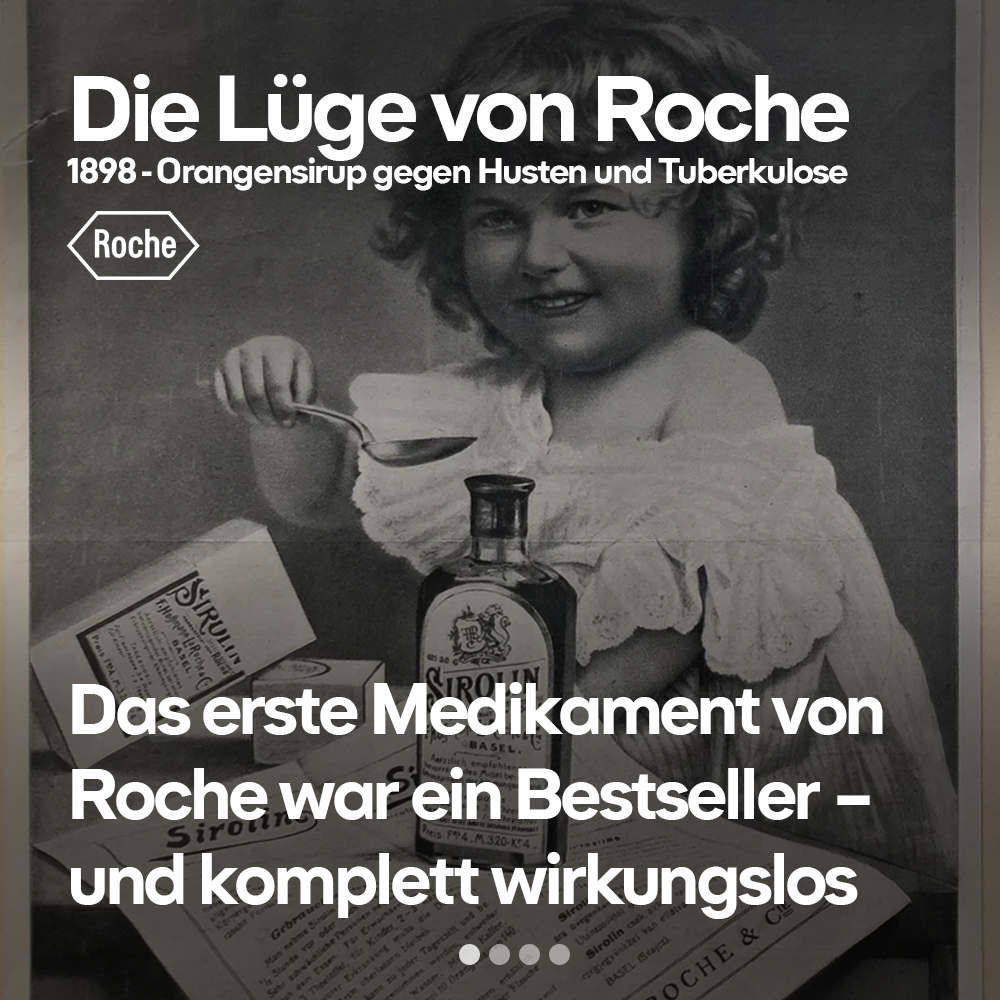
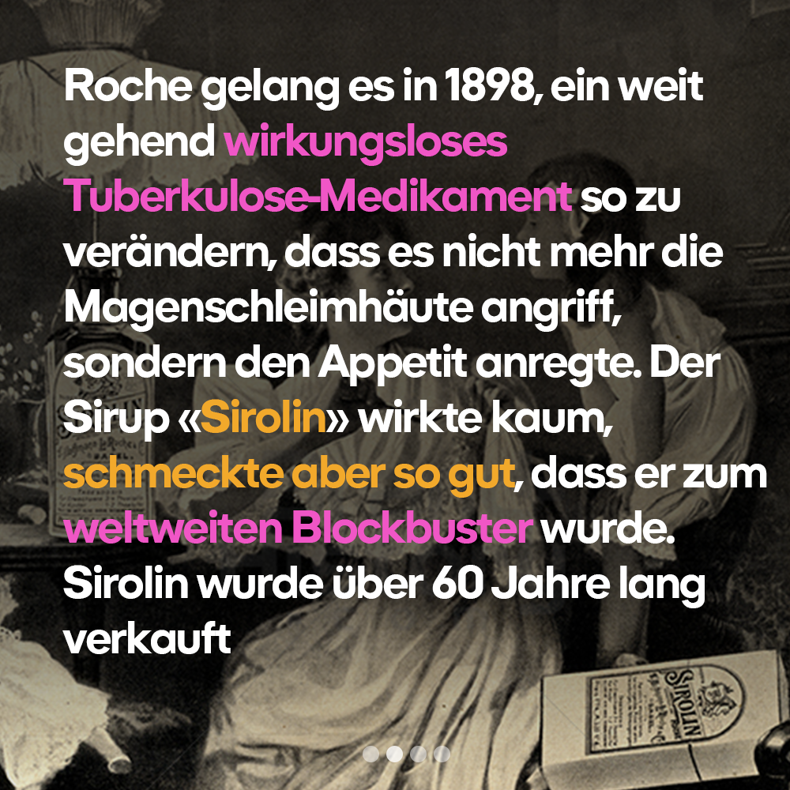

Konzeption für multinationals
2024
Obwohl ich eine leidenschaftliche Befürworterin der Konzernverantwortungsinitiative bin, arbeitete ich bei Farner an Projekten für multinational – die Gegenbewegung von SwissHoldings. Wir hatten bei Farner immer die Wahl, bei Projekten Nein zu sagen, wenn wir uns ideologisch in einem Dilemma befanden. Dieses Nein setzte ich bei einigen Projekten ein, und meine Entscheidung wurde respektiert, was ich an Farner schätzte. Wenn man allerdings alles ablehnt, hat man irgendwann keine Aufträge mehr. Deswegen entschied ich mich jeweils für das kleinere Übel. Die Gegenkampagne zur Konzernverantwortungsinitiative war allerdings nicht das kleinste Übel. Aber ich glaubte an die Überzeugungskraft der Konzernverantwortungsinitiative und daran, dass auch die besten Argumente und Kampagnen gegen sie nicht standhalten können – solange die Kampagnen gegen sie faktisch wahr sind. Mit dieser Ausgangslage motivierte ich mich, eine Gegenkampagne zu entwickeln. Als Beispiel nahm ich Roche mit ihrem ersten wirkungslosen Bestseller «Sirolin». Zwar heilte das Mittel keinen einzigen Husten, verhalf Roche aber zu jenem Kapital, mit dem das Unternehmen heute einige der wirksamsten Krebsmedikamente der Welt entwickelt. Das Konzept arbeitet die Vergangenheit auf, gesteht Fehler ein, zeigt Rückgrat und weist das Vorhandensein eines historischen Gedächtnisses im Unternehmen nach – eine Voraussetzung für sensibilisiertes und mündiges Unternehmenshandeln im freien Markt. Das Konzept positioniert den Anspruch Schweizer Grossunternehmen und stillt ein langjähriges Bedürfnis der Kritiker:innen: dass Grossunternehmen aufhören, um den heissen Brei herumzureden, und stattdessen die Wahrheit auftischen.